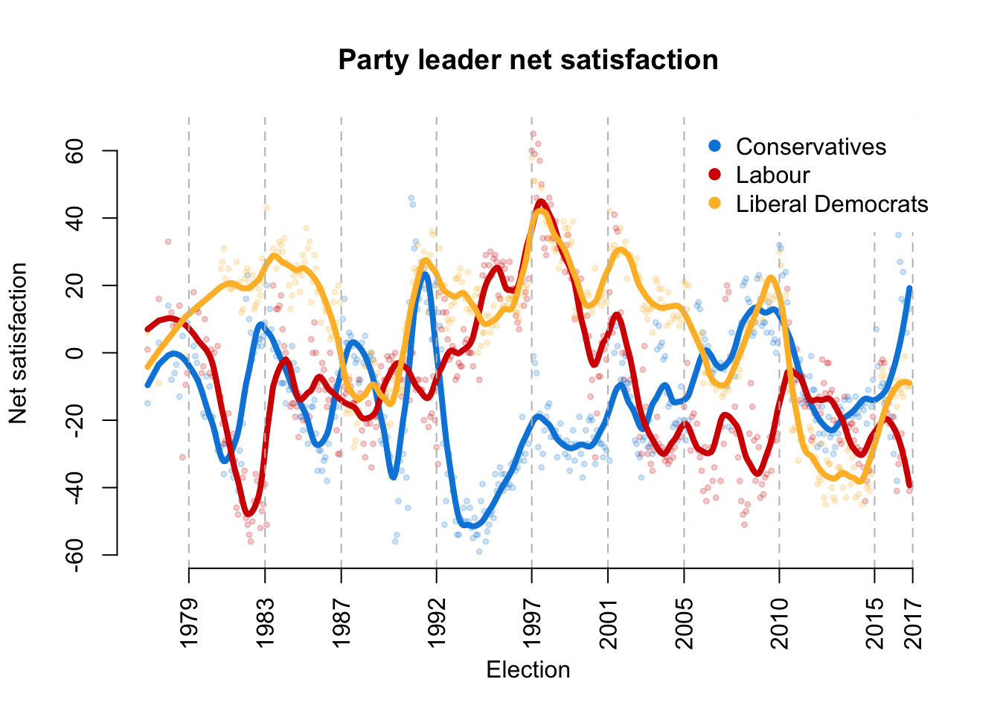
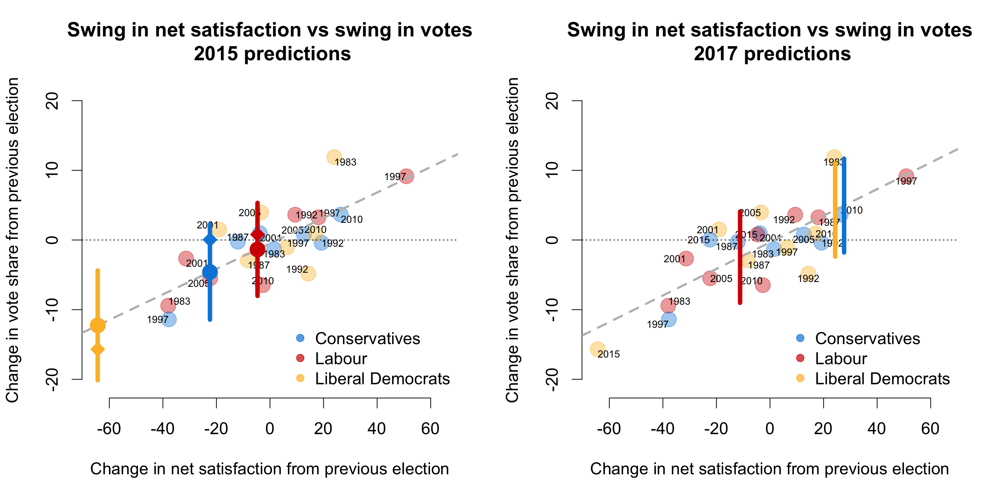
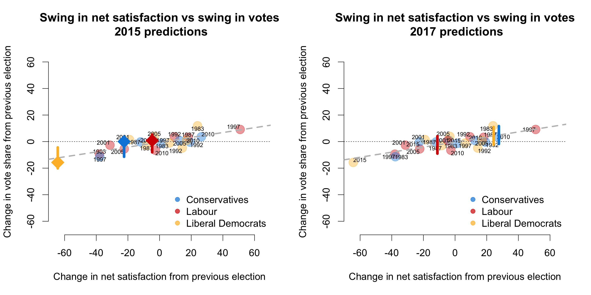

During the 2015 UK general election I wrote a piece for the LSE election blog which looked at whether party leader approval ratings predict election outcomes. This was in the context of a campaign where the Labour leader was seen as impossibly unpopular because, amongst other things, he seemed unable to eat a bacon sandwich. The tl;dr version of that piece was: There is a relatively weak relationship between leader approval ratings and election outcomes. Probably best not to put too much weight on them.
We now face fresh elections in a few weeks’ time, and, as in 2015, speculation is rife (see here, here, and here, for example) that because their leader is impossibly unpopular, Labour face an electoral wipe-out. It therefore seems like a reasonable time to return to this topic. In this post, I am going to assess how well a (very simple) prediction model based on party leader approval ratings performed in 2015, and re-run the analysis for 2017. As in 2015, all the data I present here is taken from Ipsos MORI’s monthly political barometer surveys
First off, how have trends in Labour, Conservative, and Liberal Democrat party leader satisfaction changed since 2015? The figure below plots the proportion of Ipsos respondents answering “satisfied” minus the proportion of respondents answering “dissatisfied” for each leader at monthly intervals from 1974 to about one month ago, along with some smoothed trend lines.

There has been a lot of movement in these trends since the last election for all three parties. Notably, Theresa May is considerably more popular now than David Cameron was on the eve of the 2015 election. May is currently also a little more popular than Cameron was at the start of the coalition government, and almost as popular as Major in the early 1990s.
Tim Farron is also clearly more popular than Nick Clegg was throughout much of the coalition government, though that is a low baseline for comparison. Focussing only on the periods in which the Liberal Democrats were in opposition, Farron’s satisfaction rating is lower now than Lib Dem leaders at almost any other point in recent history.
Corbyn’s ratings are, by almost any standard of comparison, very poor. His current rating is lower than at any point in Miliband’s tenure, and only marginally better than the lows of Gordon Brown in 2009 and Michael foot before the 1983 election. That said, the difference between Miliband in 2015 and Corbyn in 2017 is not enormous – something that will become relevant in the discussion of the predictions below.
The panels in the figure below show the simplest possible model for predicting change in national vote share with changes in party leader approval. The x-axis shows the change in average party leader approval from the 100 days before one election to 100 days before the next election. The y-axis shows the change in national vote share from one election to another. Points represents parties in a given election, and vertical lines are the predictions from this model for 2015 (left panel) and 2017 (right panel). There is a lot of uncertainty in the relationship between party leader approval and vote share, and so rather predictions are given as a range of plausible values (90% prediction intervals). The gray dashed line is the best-fitting line between these points.

How did this model do in 2015? Not very well. In a story that is by now familiar, this model drastically underestimated the Conservative vote share in 2015. Comparing the point estimate for the Conservatives in 2015 (blue circle) to the real change in vote share from 2010 to 2015 (blue diamond) suggests that this model underestimated Conservative suport by about 5 percentage points. Which is pretty awful. For example, by way of comparison, the forecast by the team at electionforecast.co.uk underestimated the Conservative vote by just 1.7 percentage points.
Similarly, the estimates for Labour in 2015 were also garbage. This model suggested that Labour would decrease their share of the vote by about one and a half percentage points, whereas in reality it increased by about a point.
On the other hand, this model did a reasonable job at predicting support for the Liberal Democrats. The point estimate in the left-hand plot implied that the Lib Dems would lose 12.2 percentage points of their share of the national vote, where the true figure was 15.7. (The electionforecast.co.uk model suggested that the Lib Dems vote share would decrease by 11.3 percentage points.) This is particularly humbling, as in 2015 I wrote the following:
We have never witnessed a Lib Dem leader as unpopular as Nick Clegg. The upshot is that the extrapolation implied by this model almost certainly overestimates the extent of the Lib Dem demise in 2015, regardless of Clegg’s current (woeful) personal ratings.
So, the only case where the model performed reasonably is the case I identified in advance as being dumb. Go figure.
Despite the generally poor performance of this model, we can nevertheless see what this data suggests for the election on June 8th. The right hand panel of the figure above does this by plotting the 90% prediction intervals for each party based on the average net satisfaction rating of each leader over the past 100 days. There are a few things to note.
First, although Corbyn’s current ratings are low in absolute terms, they are not that much lower than Miliband’s were during the equivalent period. Because the model here focuses on change in approval ratings, Labour’s vote share is predicted to fall by “only” 2.5 percentage points. This would be a bad result, but Labour lost a larger share of the vote in 1983, 2005 and 2010. One interpretation of this is that voters already priced in the unpopularity of the Labour leader in 2015 (Miliband) and so the unpopularity of the Labour leader in 2017 (Corbyn) is unlikely to lead to (further) large declines in Labour’s vote share.
Second, the point estimates for both the Conservatives and the Lib Dems suggest substantial gains in terms of national vote share. The model suggests that the Conservatives should see their vote share increase by 4.9 percentage points, and the Lib dems by 4.3 points. Put into context, such a shift would be the largest increase in vote share by the Conservatives since 1979, and since 1983 for the Liberal Democrats.
More generally, however, I stand by the main conclusion from the piece I wrote in 2015:
The main point is simple: party leaders’ approval ratings fluctuate much more dramatically than parties’ vote shares… Just because a party leader has become drastically unpopular, this does not mean that the party will lose a drastic number of votes at the election.
This is indicated by the wide prediction intervals in the figures above. For example, the estimate of the change in the Labour national vote share ranges from a 9 percentage point decrease to a 4 point increase. Similarly, the intervals for both the Conservatives and the Lib Dems run from roughly an 11 point increase to a 2 point decrease. In short, predictions based purely on leader approval ratings are therefore very uncertain!
This point is made clearer in the the figures below. In these panels, I plot the same data as before but constrain the x and y axes to have the same scale. When we do this, it is straightfoward to see that party leader approval ratings are simply not terribly predictive of party vote shares. A decline in a leader’s personal net approval rating of 10 points, is associated with a decrease in vote share of only 2.2 percentage points.

The tl;dr version of this piece, then, is also familiar: There is a relatively weak relationship between leader approval ratings and election outcomes. Probably best not to put too much weight on them.
{kind=link}